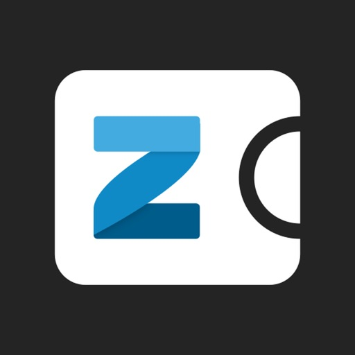
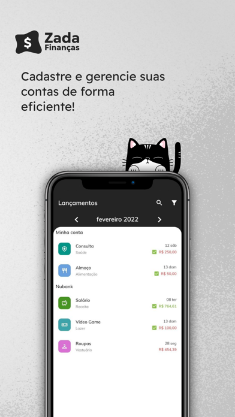
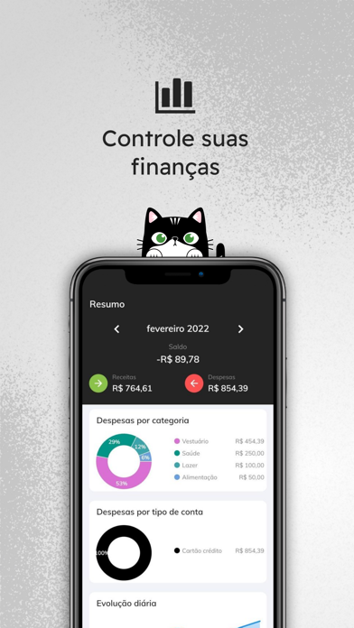

AGORA
GERENTE P&D · DESENVOLVEDOR · PROFESSOR
Código, contexto &
conhecimento.
Olá, eu sou o Rafael. Desenvolvo sistemas, entendo problemas e compartilho o que aprendo — na CantúStange e em sala de aula na UNISC.
DESDE 2024
Professor
Universidade de Santa Cruz do Sul
EM SISTEMAS DESDE
2008
Venâncio Aires
Rio Grande do Sul, Brasil
01 · ATUAÇÃO
Três perspectivas.
Um mesmo propósito.
Da lógica do sistema à troca em sala de aula,
conectar conhecimento e aplicação.
DesenvolvimentoTransformar ideias em software
CONSTRUIRA construção de sistemas aproxima lógica, dados e necessidades de uso. É o espaço em que o conhecimento técnico se transforma em ferramentas para o dia a dia.
Análise de sistemasConectar o problema à solução
COMPREENDERMinha experiência em análise de sistemas e a atuação atual como Gerente P&D na CantúStange conectam as necessidades de negócio às possibilidades do software. Entender o contexto é parte da construção de uma boa solução.
Ensino e tecnologiaAprender também é compartilhar
MULTIPLICARComo professor na UNISC, conecto minha trajetória em computação ao ensino. A sala de aula é um espaço para explorar ideias, fazer perguntas e aproximar conceitos da prática.
02 · PROJETOS
Do código ao
uso real.
Aplicativos que fazem parte da minha trajetória
de desenvolvimento na CantúStange, para Android e iOS.

Finanças pessoais
Zada Finanças
Android e iOS


Controle financeiro pessoal para organizar contas, receitas, despesas e cartões em um só lugar, com gráficos e resumos para acompanhar o dia a dia.
- Receitas e despesas
- Cartões de crédito
- Gráficos e resumos
Histórico de compras
Tá Barato
Android e iOS
Leitura de notas fiscais por QR Code, com histórico de compras e pesquisa de produtos para acompanhar os preços pagos no dia a dia. Desenvolvido para notas de consumidor do Rio Grande do Sul.
- Leitura de QR Code
- Histórico de compras
- Pesquisa de produtos
Tecnologia em sala de aula
Ferramentas que desenvolvi para tornar conceitos de computação
mais visuais e acessíveis nas disciplinas que leciono.
Recursão e algoritmos
Simulador de Fibonacci
Explore a árvore de chamadas de Fibonacci e veja como a recursão funciona, incluindo o recálculo de subproblemas.
- HTML
- CSS
- JavaScript
Programação paralela
Produtor-Consumidor
Acompanhe um buffer compartilhado, ajuste as velocidades e entenda a espera quando ele está cheio ou vazio.
- HTML
- CSS
- JavaScript
Comunicação de dados
Codificação Digital-Digital
Transforme sequências de bits em gráficos de sinal com sete métodos de codificação, como Manchester, NRZ e AMI.
- HTML
- CSS
- JavaScript
03 · STACK
Repertório técnico.
Linguagens, plataformas e ferramentas que já usei
em projetos de software, pesquisa e ensino.
Linguagens 16
 C
C- Delphi
 Java
Java C++
C++ Python
Python C#
C# PHP
PHP JavaScript
JavaScript Dart
Dart HTML
HTML- SQL
 Kotlin
Kotlin MATLAB
MATLAB- VHDL
- VRML
- Swift
Ferramentas e plataformas
 VS Code
VS Code Docker
Docker Azure
Azure AWS
AWS- .NET
 n8n
n8n
Pesquisa e experimentação
 OpenCV
OpenCV- Kinect
Na pesquisa: C# e .NET com Kinect; C++ e OpenCV para visão estéreo.
ATUAL
Gerente P&D
CantúStange
Pesquisa e desenvolvimento de software.
2024 — ATUAL
Professor
Universidade de Santa Cruz do Sul · UNISC
Ensino e troca de conhecimento em tecnologia.
2014 — 2015
Mestrado em Sistemas e Processos Industriais
Universidade de Santa Cruz do Sul
Pesquisa em visão estéreo e detecção de obstáculos.
2012
Graduação em Ciência da Computação
Universidade de Santa Cruz do Sul
Trabalho sobre interação entre usuário e computador com Kinect.
DESDE 2008
Trajetória em sistemas
Cantú, Stange & Cia Ltda.
Experiência com análise e desenvolvimento de sistemas.